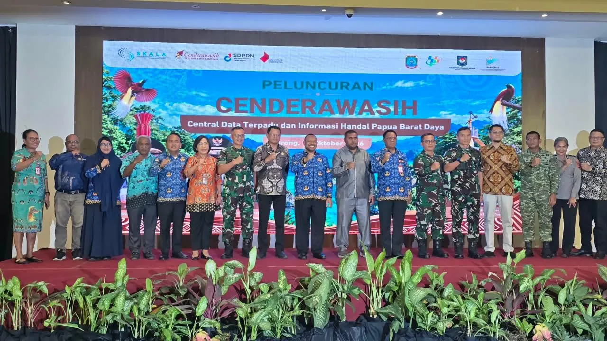
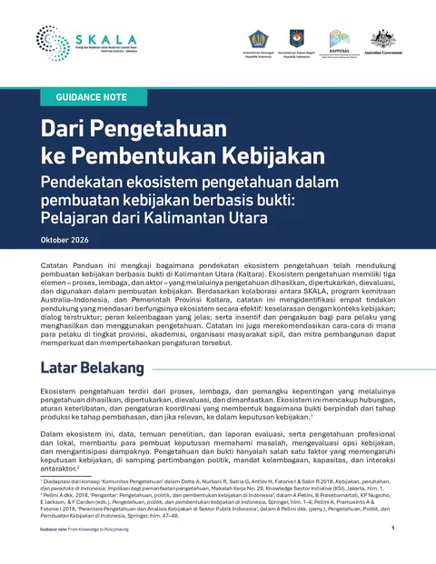
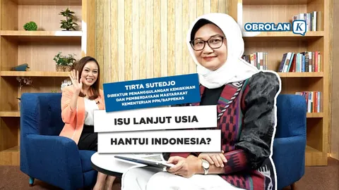

SKALA adalah kemitraan Australia-Indonesia untuk mengurangi kemiskinan dan ketimpangan lewat layanan dasar yang lebih baik.
Sinergi dan Kolaborasi untuk Akselerasi Layanan Dasar
SKALA mendukung Pemerintah Indonesia meningkatkan penyediaan layanan dasar bagi masyarakat miskin dan rentan di daerah tertinggal.
Bersama Kementerian Dalam Negeri, Kementerian Keuangan, dan Bappenas, di tingkat pusat dan di dua belas provinsi.
Tujuan kami
Tujuan
Mendukung pengurangan kemiskinan dan ketimpangan di Indonesia melalui peningkatan ketersediaan layanan dasar bagi masyarakat miskin dan rentan di daerah tertinggal.
Tiga capaian akhir program
Kementerian/Lembaga mengembangkan dan menerapkan kebijakan, rencana, dan anggaran yang lebih baik untuk memperkuat penyediaan layanan dasar di daerah tertinggal.
- IO 1Kementerian/Lembaga memperkuat kerangka regulasi dan kebijakan mengenai Pengelolaan Keuangan Publik dan Penerapan Standar Pelayanan Minimal di daerah.
- IO 2Kementerian/Lembaga menggunakan bukti/data dalam memperkuat perencanaan, koordinasi, dan penentuan prioritas desentralisasi.
- IO 3Kementerian/Lembaga meningkatkan pemanfaatan analisis dan bukti mengenai GEDSI dalam menyiapkan kebijakan, perencanaan, dan anggaran.
Pemerintah provinsi dan kabupaten sasaran mampu merencanakan, menganggarkan, dan mengelola penyediaan layanan dasar secara lebih efektif.
- IO 4Pemerintah provinsi dan kabupaten sasaran mampu mengelola keuangan publik dengan lebih baik untuk meningkatkan layanan dasar yang sesuai Standar Pelayanan Minimal.
- IO 5Pemerintah provinsi dan kabupaten sasaran memperkuat pemanfaatan bukti/data mengenai kebutuhan perempuan, penyandang disabilitas dan masyarakat rentan dalam rencana dan anggaran layanan dasar.
- IO 6Pejabat kunci di provinsi dan kabupaten sasaran makin memahami, mampu mengukur dan merencanakan penyediaan layanan dasar yang sesuai kebutuhan seluruh warga.
Perempuan, penyandang disabilitas, dan kelompok rentan di wilayah sasaran terwakili dan dapat mempengaruhi proses perencanaan dan pengambilan keputusan mengenai layanan dasar di daerah.
- IO 7Pemerintah makin kuat dalam melibatkan perempuan, penyandang disabilitas, dan kelompok rentan dalam proses perencanaan dan pengambilan keputusan di daerah.
- IO 8Perempuan, penyandang disabilitas, kelompok rentan dan/atau perwakilannya makin terlibat dan mempengaruhi proses perencanaan dan pengambilan keputusan di daerah.
- IO 9Sistem informasi di daerah menghasilkan analisis yang lebih akurat tentang kebutuhan perempuan, penyandang disabilitas dan kelompok rentan sehingga layanan dasar lebih inklusif.
Fokus kerja
Empat bidang kerja yang saling terhubung, dari kebijakan pusat sampai suara warga.

Regulasi dan standar
Memperkuat kebijakan keuangan publik dan Standar Pelayanan Minimal di daerah.

Perencanaan dan penganggaran
Membantu provinsi dan kabupaten merencanakan dan menganggarkan layanan dasar.

Data dan sistem informasi
Data terkonsolidasi seperti SIKOMPAK dan SEPAKAT untuk keputusan berbasis bukti.

Partisipasi dan GEDSI
Perempuan, penyandang disabilitas, dan kelompok rentan ikut menentukan arah layanan.
Optimalisasi pemanfaatan data dan sistem analisis pemerintah
Sistem data pusat dan daerah yang pemanfaatannya didukung SKALA.
- SIKOMPAK
- SAIK
- SIOPAPUA
- SEPAKAT
- SIKD
- SIGAP
- SIPD
- SDPDN (Pelita)
- SIPPP
- e-SPM
- SD Aceh
- Satu Data NTB
- Sasando NTT
- DATAKU (SD Kaltara)
- PENTAGON (Gorontalo)
- SIDASSKEN
Capaian dan dampak
Sorotan perubahan di daerah mitra, seperti dilaporkan pada peta wilayah kerja dan suara mitra di skala.or.id.
- Wilayah kerja
- 12 provinsiprovinsi wilayah kerja: 10 lokasi intervensi utama dan 2 lokasi intervensi tambahanPeta wilayah kerja
- Pelaporan e-SPM Maluku
- 98 persenketerisian pelaporan e-SPMMaluku
- Alokasi SPM Kalimantan Utara
- Rp293,4 miliaralokasi SPM 2025, naik dari Rp142,5 miliar pada 2024Kalimantan Utara
- Portal Open Data Aceh
- 6 bulanportal Open Data Aceh rampung, dari target 2 tahunAceh
Wilayah kerja
Dua belas provinsi, dari Aceh hingga Papua. Pilih provinsi untuk melihat sorotannya.
- Lokasi intervensi utama
- Lokasi intervensi tambahan (graduasi dalam 1 periode)
Cerita dan wawasan
Pembelajaran dari daerah mitra, dalam bentuk cerita lapangan, publikasi, dan siniar.
- 17 November 2026
SEPAKAT untuk Perencanaan yang Lebih Tepat Sasaran: Cerita Pemanfaatan Data dari Berbagai Daerah
(skala.or.id, tab baru)  4 November 2026
4 November 2026Menembus Ombak, Menjangkau Masyarakat: Kolaborasi Menguatkan Layanan Dasar di Kepulauan Maluku
(skala.or.id, tab baru) Oktober 2026
Oktober 2026Mendorong Penganggaran Pemerintah Pusat yang Lebih Responsif terhadap Tantangan Geografis Daerah
(skala.or.id, tab baru)
- 12 November 2026
Kumpulan Naskah Risalah Kebijakan Terpilih tentang Analisis Belanja dan Pendapatan Publik (PERA) yang Inklusif: Provinsi Kalimantan Utara
(skala.or.id, tab baru) 
Oktober 2026Dari Pengetahuan ke Pembentukan Kebijakan: Pelajaran dari Kalimantan Utara
(skala.or.id, tab baru)

Seri Podcast Harian KompasIsu Lanjut Usia Hantui Indonesia?
(skala.or.id, tab baru) Siniar SKALA
Siniar SKALAMenerobos Batas: Perspektif tentang Identitas, Disabilitas, dan Mengubah Stereotip
(skala.or.id, tab baru) Seri Podcast Harian Kompas
Seri Podcast Harian KompasRegsosek untuk Perencanaan Pembangunan Nasional yang Lebih Baik
(skala.or.id, tab baru)
Kabar terbaru
Semua kegiatan di skala.or.id (tab baru)
Papua Barat Daya
 Papua Selatan
Papua SelatanPapua Selatan perkuat data dan perlindungan sosial bagi Orang Asli Papua
(tab baru) Nusa Tenggara Barat
Nusa Tenggara BaratNTB luncurkan Dashboard Eksekutif untuk memperkuat pembangunan berbasis data
(tab baru) SEKAR Inklusif
SEKAR InklusifSistem manajemen pembelajaran untuk memperkuat partisipasi masyarakat dalam proses pembangunan
(tab baru) Keuangan daerah
Keuangan daerahMenguatkan kemandirian fiskal daerah melalui Local Tax Ratio
(tab baru)
Kemitraan
Program Kemitraan Australia-Indonesia, bersama Kemendagri, Kemenkeu, dan Bappenas.
Dikelola oleh DT Global.
Suara mitra
“Berkat dukungan SKALA, portal Open Data Aceh yang ditargetkan 2 tahun dapat rampung dalam 6 bulan.”
 Sayid AzharyKepala UPTD Statistik Diskominfo dan Sandi Aceh
Sayid AzharyKepala UPTD Statistik Diskominfo dan Sandi AcehMari bergerak bersama
Ikuti kabar SKALA lewat kanal WhatsApp, atau tulis kepada kami untuk kerja sama.